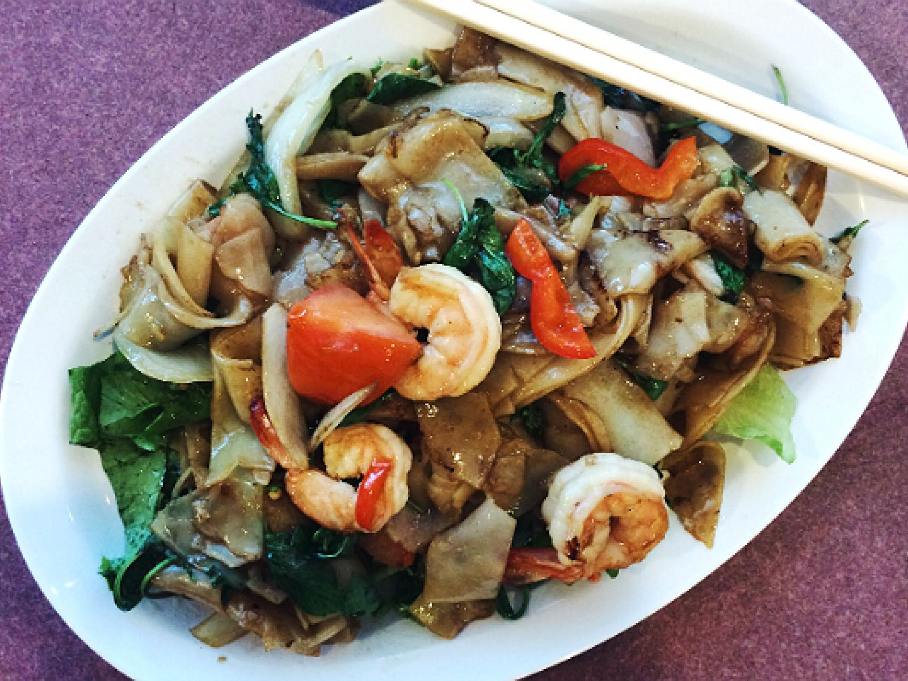
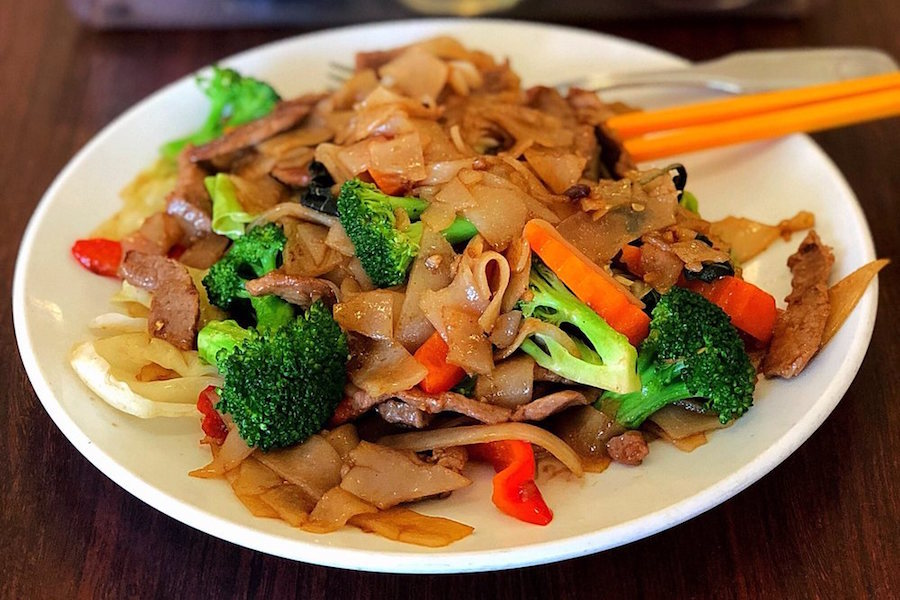
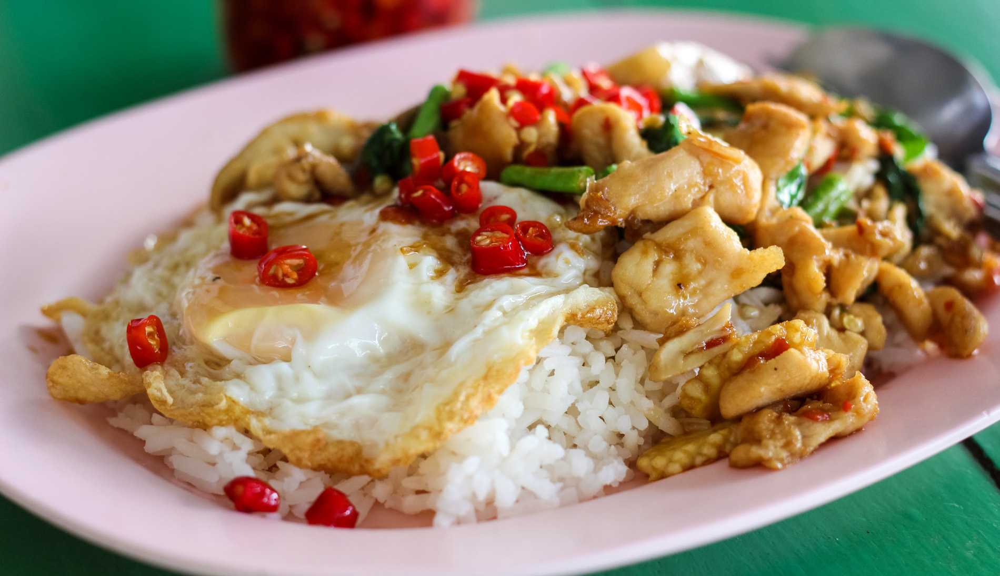

We offer delicious, authentic Thai cuisine!
Open seven days a week from 3-10pm
Located at The Sugarbush Inn - 1838 Sugarbush Access Road, Warren VT, 05673
Call 802-496-3008 to make a reservation or place an order
Fit to be Thai'd ~ Thai Resaurant
There is a place in the Far East, where instead of greeting you with Hello, or How are you? They simply ask you, What did you have to eat, and they may ask you this 5 to 6 times a day. Thai People lend new credence to the phrase "FOODIE", and they do it with passion. Come and join us at "FIT TO BE THAI'D" and enjoyed the passion of living and breathing the food and flavor of Thailand as a way of life, a lifestyle as it were. The Culinary Queen of the "FIT TO BE THAI'D" kitchen, Nattaya Isaacson is native to Thailand, hailing from BangKok. She is assisted in the kitchen by her husband Bruce Isaacson. Nattaya and Bruce met and married in Key West, while Nattaya was managing a Thai Restaurant and Bruce was performing as a Singer Songwriter at "The Hog's Breath Saloon"